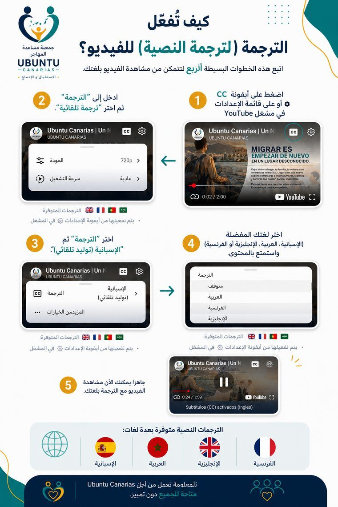

الرسالة
مرافقة المهاجرين وأسرهم في مسار اندماجهم الاجتماعي والمهني والمجتمعي في جزر الكناري، من خلال تقديم التوجيه والتدريب والدعم النفسي والاجتماعي، مع احترام استقلاليتهم وكرامتهم.
نؤمن باندماج كريم وتشاركي وتحويلي.
بالنسبة لنا، الاندماج ليس إجراءً يُحلّ بورقة أو عقد، بل هو عملية تُبنى يومًا بعد يوم، جنبًا إلى جنب مع الشخص وبالوتيرة التي تناسبه. لذلك نجمع بين التوجيه العملي —القانوني والمهني والتدريبي— وبين الدعم النفسي الاجتماعي الذي يقرّ بما يحمله كل شخص معه: تاريخه، وقدراته، وحقه في تقرير مصير حياته. نعمل من أجل ألا يكون من يصل مجرد متلقٍّ للمساعدة، بل طرفًا فاعلًا في مسيرته الخاصة، ومن أجل أن يتحول المجتمع المُستقبِل أيضًا في هذا الطريق، متعلمًا أن ينظر إلى الهجرة بوصفها فرصة لا مشكلة تجب إدارتها.

الترجمة متاحة بلغات: 


 · يمكن تفعيلها من أيقونة الإعدادات في مشغّل الفيديو
· يمكن تفعيلها من أيقونة الإعدادات في مشغّل الفيديو

وُلدت أوبونتو كناريا من التقاء أشخاص، جاؤوا من مسارات مختلفة، يتشاركون قناعة واحدة: أن الاستقبال والاندماج يُبنيان بالمرافقة، لا من مكاتب بعيدة عن واقع من يصل حديثًا.
تأسست الجمعية في لاس بالماس دي جران كناريا على يد أربعة أعضاء مؤسسين، استجابةً مباشرة للاحتياجات التي رآها وسمعها وعمل عليها الفريق على مدى سنوات من العمل الاجتماعي والتوجيه المهني والدعم النفسي والاجتماعي للمهاجرين في الأرخبيل.
بدأنا ننسج شبكة علاقات مع مؤسسات وإدارات ومواطنين، برغبة في النمو دون أن نفقد أبدًا القرب والإصغاء اللذين وُلدنا بهما.
مرافقة المهاجرين وأسرهم في مسار اندماجهم الاجتماعي والمهني والمجتمعي في جزر الكناري، من خلال تقديم التوجيه والتدريب والدعم النفسي والاجتماعي، مع احترام استقلاليتهم وكرامتهم.
مجتمع كناري تُفهم فيه الهجرة كفرصة للإثراء المتبادل، ويحصل فيه كل شخص، أيًا كان أصله، على فرصة حقيقية لبناء مشروع حياته الخاص.
نعمل بصرامة ومساءلة تجاه الأشخاص الذين نرافقهم، والجهات الشريكة، والمجتمع الكناري ككل.
تدير أوبونتو كناريا مجلسٌ إداري تنتخبه الجمعية العمومية للأعضاء، ويتولى مسؤولية السهر على الالتزام بنظامنا الأساسي وحسن استخدام موارد الجمعية.
نؤمن بأن الثقة تُبنى بإظهار من نحن، وكيف ننظّم أنفسنا، ومن أين تأتي أموالنا بشفافية تامة. لذلك نضع معلوماتنا القانونية ومعلومات حوكمتنا في متناول الجميع.
أسّست أوبونتو كناريا لأبني المشروع الذي طالما حلمت به: مرافقة المهاجرين انطلاقًا من التجربة المعاشة، لا من النظرية فقط.


نصغي دون إصدار أحكام لفهم كل قصة والاستجابة للاحتياجات الحقيقية.

نسير جنبًا إلى جنب مع كل شخص، معززين استقلاليته وقراراته الخاصة.

نقدّر التنوع الثقافي بوصفه ثروة تبني مجتمعات أكثر إنسانية.
نعمل بصدق ومسؤولية، ونخضع للمساءلة أمام الأشخاص والمجتمع.

نتعاون مع المؤسسات والإدارات والمواطنين لمضاعفة أثرنا.
لا أحد يصل وحيدًا. لا أحد يندمج وحيدًا. نقوم بذلك معًا، باحترام وأمل.
فريق متنوع وملتزم وقريب.
نعمل جنبًا إلى جنب مع "بيت أفريقيا" (Casa África) ومؤسسات عامة وهيئات من غرب أفريقيا من أجل إدارة شاملة وإنسانية لتدفقات الهجرة.